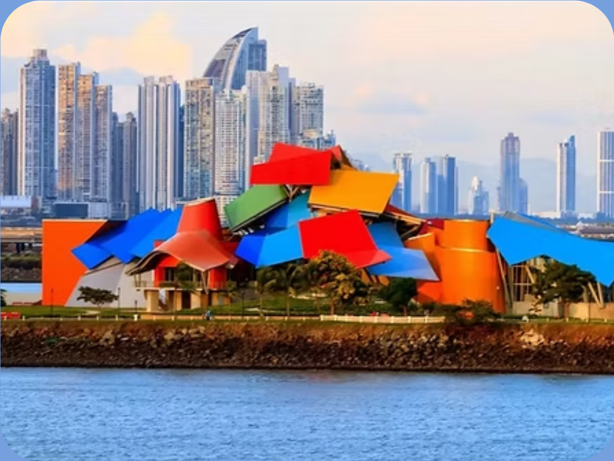

Giras Educativas
Las actividades educativas NO incluyen transporte, por lo que los participantes deberán trasladarse por sus propios medios al lugar indicado.

Biomuseo
Explora de forma divertida cómo Panamá se convirtió en un puente para la vida en el planeta. Los participantes recorrerán exhibiciones interactivas sobre biodiversidad, animales y naturaleza, fomentando la curiosidad y el aprendizaje en un entorno educativo y seguro.
Precio: B/. 25 por persona (incluye la participación del niño, un acompañante responsable y un refrigerio pequeño)

Explora Centro de Ciencias y Arte
Descubre la ciencia de forma divertida mediante exhibiciones interactivas, experimentos y actividades que despiertan la curiosidad, la creatividad y el aprendizaje a través del juego.
Precio: B/. 15 por participante (incluye la participación del niño y un acompañante responsable)

Museo del Canal de Panamá
Conoce la fascinante historia de la construcción del Canal de Panamá a través de exhibiciones interactivas, objetos históricos y experiencias educativas que permiten descubrir uno de los mayores logros de la ingeniería mundial.
Precio: B/. 25 por participante (incluye la participación del niño y un acompañante responsable)